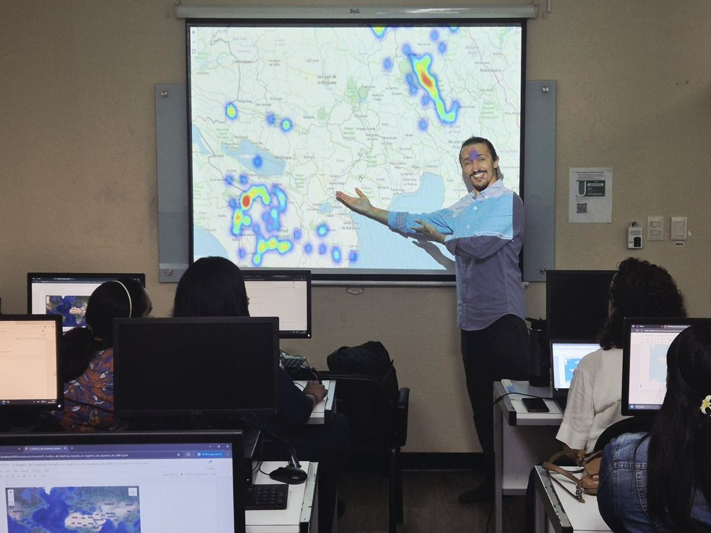

Una comunidad abierta de datos, ciencia y áreas protegidas데이터, 과학, 보호지역을 위한 열린 공동체
Instituciones, científicos, guardaparques y ciudadanos aprenden juntos con software libre y datos públicos para proteger la naturaleza del país.정부기관, 연구자, 레인저, 시민이 무료 소프트웨어와 공개 데이터로 이 나라의 자연을 지키는 방법을 함께 배웁니다.
Desde 20212021년부터
Park + Lab: parque y laboratorioPark + Lab: 공원과 실험실
ParkLab nació en el Servicio de Parques Nacionales de Corea (KNPS). Cada año unas 100 personas aprenden información geográfica, datos, código abierto y ecología, sin distinción de cargo ni institución. ParkLab DR lleva esta experiencia a la República Dominicana para que siga creciendo después del proyecto.파크랩은 국립공원공단에서 시작했습니다. 매년 100명 안팎이 소속과 직급을 넘어 공간정보, 데이터, 오픈소스, 생태를 함께 배웁니다. ParkLab DR은 이 경험을 도미니카공화국에 전하고, 사업이 끝난 뒤에도 이어지는 공동체를 만듭니다.

- Talleres de datos데이터 워크숍Práctica de SIG de código abierto (QGIS y Python) con datos públicos.공개 데이터로 하는 오픈소스 GIS(QGIS, Python) 실습
- Investigación conjunta공동연구Proyectos con datos abiertos que nacen de las preguntas de sus miembros.구성원의 질문에서 시작하는 열린 데이터 연구
- Ciencia ciudadana시민과학Voluntarios que registran la biodiversidad.시민과 자원봉사자의 생물다양성 기록
Mejore sus habilidades무엇을 배우나요
Software libre, datos públicos y problemas reales del país무료 소프트웨어, 공개 데이터, 이 나라의 실제 문제

Para participar참가 준비
- Inscribirse con el formulario que compartimos por redes sociales y WhatsAppSNS와 WhatsApp으로 공유하는 신청서 작성
- Laptop con QGIS instalado y los datos del taller (descárguelos aquí)QGIS를 설치하고 실습 데이터를 받은 노트북 (여기서 내려받기)
- Ganas de aplicar lo aprendido: cada participante prepara un plan de acción배운 것을 적용할 의지: 참가자마다 Action Plan 작성
Recomendado para이런 분께 추천
- Personal del MMARN y guardaparques환경부 직원과 레인저
- ONG, universidades, estudiantes y ciudadanosNGO, 대학, 학생, 시민
- Personas que nunca han usado un SIG: empezamos desde ceroGIS를 처음 써 보는 분도 환영: 처음부터 시작
El proyecto사업 소개
Una cooperación entre Corea y la República Dominicana대한민국과 도미니카공화국의 협력 사업
ParkLab DR nace en el marco del Proyecto de Fortalecimiento del Monitoreo del Cambio Climático en Parques Nacionales basado en TIC. El proyecto apoya el monitoreo de las áreas protegidas con tecnologías de la información y capacita al personal del MMARN en el uso de datos.ParkLab DR은 「ICT 기반 국립공원 기후변화 모니터링 역량강화 사업」에서 시작했습니다. 이 사업은 정보통신기술로 보호지역 모니터링을 강화하고, 환경부 직원의 데이터 활용 역량을 키웁니다.
- Cooperan협력
- Agencia de Cooperación Internacional de Corea (KOICA) y Ministerio de Medio Ambiente y Recursos Naturales (MMARN)한국국제협력단(KOICA), 도미니카공화국 환경부(MMARN)
- Ejecuta수행
- Servicio de Parques Nacionales de Corea (KNPS)국립공원공단(KNPS)
- Capacitación연수
- 8 capacitaciones en el uso de datos. La 4.ª es el Primer Taller Técnico de ParkLab DR.데이터 활용 역량강화 연수 8회. 4차 연수가 ParkLab DR 제1차 기술 워크숍
Personas de ParkLab DR파크랩 DR 사람들
Gobierno, sociedad civil y cooperación, juntos desde el inicio정부, 시민사회, 국제협력이 처음부터 함께
Con la colaboración de협력기관